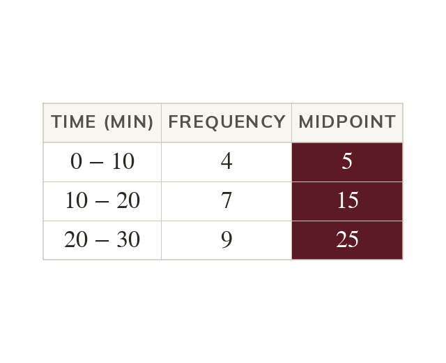

Why only an estimate
Grouping data loses the individual values. So the mean can only be estimated, from each class midpoint.
Grouping data loses the individual values, so only the class each value fell into is known. The mean can therefore only be estimated, using each class midpoint to stand in for its values.